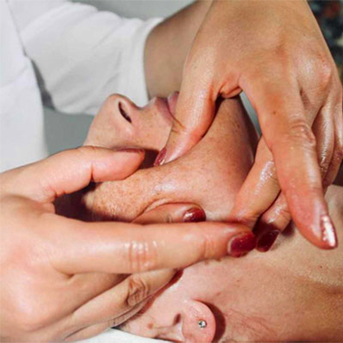
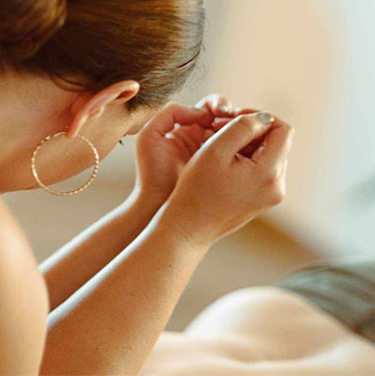

Jestem terapeutką manualną, masażystką z uwagą i szacunkiem podchodzę do problemów
i zagadnień, z którymi zgłaszają się do mnie pacjenci. Patrzę na człowieka jako całość,
holistyczne i indywidualnie. Biorę pod uwagę jego stan psychofizyczny. Wiedząc jaki wpływ na
ciało mają emocje, stres i otaczający nas świat zewnętrzny. W mojej pracy stawiam na skuteczność
i efektywność.
Moją specjalnością jest terapia dysfunkcji stawu skroniowo-żuchwowego,
wspomaganie leczenia nieprawidłowości zgryzu, bruksizmu, migren, bólu w obrębie twarzoczaszki,
neuralgii itp.
Magdalena

Podtytuł
Podtytuł
Terapia obejmuje ocenę postawy, pracę manualną obejmującą plecy, szczególnie ich
górna część, szyję, głowę, twarz oraz masaż wewnątrzustny. Dodatkowo stosuje ćwiczenia PIR,
tejping oraz zalecenia ćwiczeń i pracy własnej.
Wykonuje lecznicze masaże ciała oparte na masażu klasycznym. Jest to intensywny, głęboki masaż,
w którym wykorzystuje różne techniki takie jak: klawiterapia, bańki, elementy osteopatii i
chiropraktyki, taping, ćwiczenia itd.


Podtytuł
Terapia skierowana jest na dane dolegliwości i dysfunkcje układu ruchu.
W Integracyjnej terapii blizn pomagam pacjentom w przygotowaniu do planowanego zabiegu operacyjnego, chirurgii ogólnej i plastycznej.
W pooperacyjnej redukcji dolegliwości tj. obrzęki, zastoje, siniaki itp, co przyspiesza prawidłowe gojenie i schodzenie się rany. Pracuje z bliznami wieloletnimi niwelując ból, ciągnięcie, mrowienie, swędzenie, przeczulica, niedoczulica, odczuwanie zmian pogodowych, przerosty, zgrubienia, zrosty, wgłębienia tkanek i inne dolegliwości.
Lubię pracę ze skórą więc moja wielka pasją jest Estetyczna terapia twarzy.
To autorska, manualna metoda naturalnego odmładzania. Poprawia ukrwienie i elastyczność tkanek, struktura skóry staje się mocniejsza.
Przywraca naturalny młodzieńczy owal i wygląd twarzy, niweluje asymetrię, zbytnie napięcia mięśni, zmarszczki i bruzdy.
Z natury jestem estetką z zamiłowaniem do harmonii. Interesuję się naturalnymi metodami wspomagania leczenia, Totalną biologią, systemem rodzinnym wg Berta Hellingera, litoterapią, Feng Shui, szeroko pojętym rozwojem osobistym i duchowym.
Prywatnie miłośniczka podróży i wypraw, od lat zakochana w Italii.
W Integracyjnej terapii blizn pomagam pacjentom w przygotowaniu do planowanego zabiegu operacyjnego, chirurgii ogólnej i plastycznej.
W pooperacyjnej redukcji dolegliwości tj. obrzęki, zastoje, siniaki itp, co przyspiesza prawidłowe gojenie i schodzenie się rany. Pracuje z bliznami wieloletnimi niwelując ból, ciągnięcie, mrowienie, swędzenie, przeczulica, niedoczulica, odczuwanie zmian pogodowych, przerosty, zgrubienia, zrosty, wgłębienia tkanek i inne dolegliwości.
Lubię pracę ze skórą więc moja wielka pasją jest Estetyczna terapia twarzy.
To autorska, manualna metoda naturalnego odmładzania. Poprawia ukrwienie i elastyczność tkanek, struktura skóry staje się mocniejsza.
Przywraca naturalny młodzieńczy owal i wygląd twarzy, niweluje asymetrię, zbytnie napięcia mięśni, zmarszczki i bruzdy.
Z natury jestem estetką z zamiłowaniem do harmonii. Interesuję się naturalnymi metodami wspomagania leczenia, Totalną biologią, systemem rodzinnym wg Berta Hellingera, litoterapią, Feng Shui, szeroko pojętym rozwojem osobistym i duchowym.
Prywatnie miłośniczka podróży i wypraw, od lat zakochana w Italii.